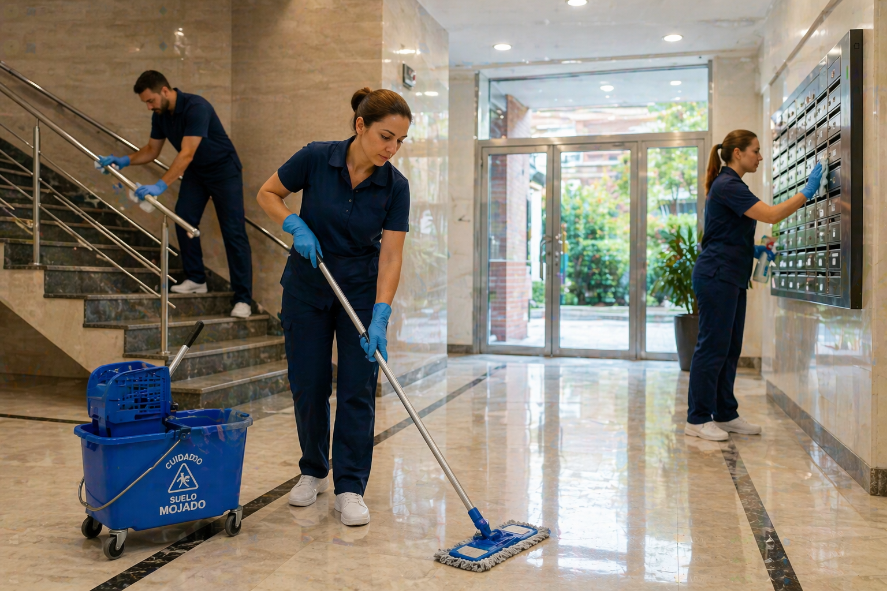

Limpieza de comunidades en Barcelona
Mantenimiento profesional de portales, escaleras y zonas comunes.
Solicitar presupuestoComunidades de vecinos
Servicio profesional de limpieza de comunidades
En Silnet Serveis ofrecemos un servicio especializado para mantener en perfecto estado portales, escaleras, ascensores y zonas comunes.
Adaptamos el mantenimiento periódico a las necesidades de cada comunidad.
Qué incluye el servicio
- Limpieza de portales y entradas
- Barrido y fregado de escaleras
- Limpieza de ascensores
- Desinfección de superficies comunes
- Mantenimiento periódico personalizado
- Vitrificado de suelos
- Limpieza de cristales
Por qué elegir Silnet Serveis
- Más de 30 años de experiencia
- Personal profesional y de confianza
- Productos ecológicos
- Servicio adaptado a cada comunidad
- Continuidad en el personal

Solicita presupuesto para tu comunidad
Explícanos las necesidades de tu comunidad para recibir una propuesta personalizada.